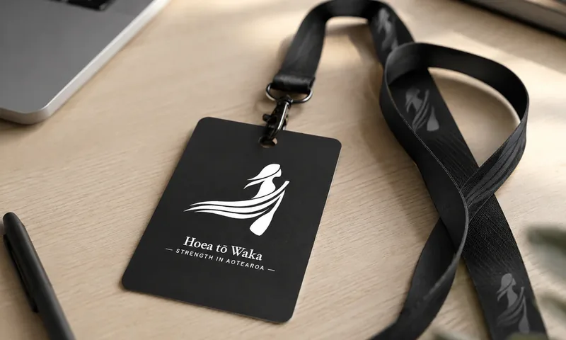

In-houseworkshops
Tailored half-day resilience training for teams and organisations.
Learn more about in-house workshopsStrength in Aotearoa
Practical resilience training and resources for organisations, teams, and the people who support others.
Hoea tō Waka
Tailored half-day resilience training for teams and organisations.
Learn more about in-house workshopsFocused one-to-one support for leaders or team members who need practical direction.
Learn more about individual coaching
PracticeTraining for people supporting clients, whānau, and communities in complex settings.
Learn more about support professional trainingThe model
The waka metaphor makes complex ideas easier to explore, remember, and apply—at work, at home, and while supporting others.
The model draws on established therapeutic and resilience ideas, then places them in plain language and a memorable visual system.
Whakapapa, tīpuna, culture, spirituality, and lived experience can be included without assuming one way of seeing the world.
People leave with a shared language for thoughts, emotions, behaviour, values, direction, and the currents around them.
Where it can help
Hoea tō Waka can support reflection and action across a wide range of situations.
Testimonials
Showing testimonial 1 of 5
Start with a conversation about your people, context, and the support that would be most useful.